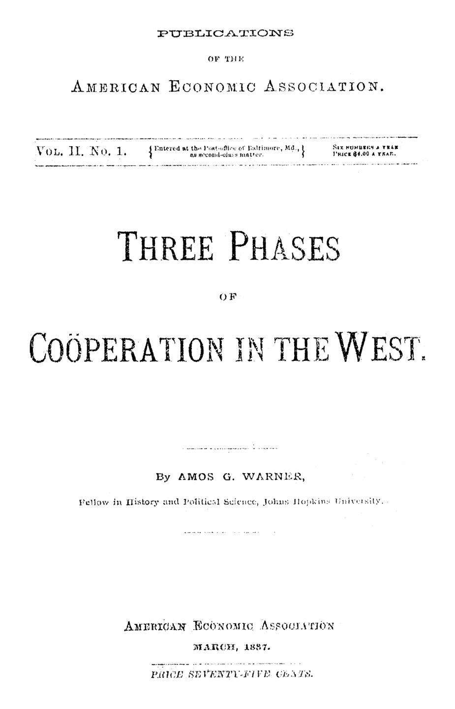

A patologia da cooperação: fazendeiros, operários e mórmons
Leitura: 7 min
Em 1887, Amos G. Warner examinou por que as cooperativas de fazendeiros quebraram, o que funcionou entre queijeiros e operários e por que os mórmons prosperaram. Conclusão: confiança tem valor econômico.


Em Cincinnati, no início da década de 1880, a Grange Supply House convocou seus acionistas para examinar o balanço do melhor semestre de sua história. Bastavam vinte presentes para o quórum. A casa tinha cerca de setecentos acionistas. O quórum não se formou.
A cena está no centro da monografia que Amos G. Warner, bolsista da Johns Hopkins, publicou em março de 1887 pela American Economic Association. Warner estudou dez estados e territórios do Oeste americano e dividiu o que encontrou em três fases: a cooperação dos fazendeiros, quase toda no passado; a dos assalariados, quase toda no futuro; e a dos mórmons, à parte. Sobre a primeira, avisa:
“A patologia da cooperação pode ser estudada com proveito.” (“The pathology of cooperation may be studied with profit.”)
Por que os armazéns da Grange quebraram?
A Grange, a ordem dos Patrons of Husbandry, prometera aos fazendeiros eliminar o intermediário. Em Ohio, a primeira agência de compras terminou entre acusações de desonestidade. A sucessora, a Supply House de Cincinnati, quis seguir o modelo de Rochdale, mas a única lei disponível, a das sociedades mútuas de seguro, impunha voto proporcional às ações. Sem fundo de reserva, distribuía todo o lucro e tomava empréstimos quando o caixa apertava. A regra de vender só à vista, impressa em itálico no estatuto, convivia com contas a receber crescentes. Em 1886, estava em liquidação.
Nas lojas locais, o roteiro se repetiu. Em Hillsboro, a diretoria proibiu margens acima de 10%; os comerciantes baixaram os preços dos itens básicos, os próprios acionistas foram comprar na concorrência e a loja quebrou. No fim, tentaram doar as ações para escapar das chamadas de capital e não encontraram quem as aceitasse.
Warner enumera seis causas. Alguns negócios não dariam certo nem com boa gestão. Faltavam leis que permitissem cooperativas verdadeiras. O fazendeiro, isolado e sem prática comercial, podia sempre voltar ao armazém de costume; um agente da Grange em Illinois resumiu que os fazendeiros eram ricos demais para cooperar. Somavam-se o endividamento rural, brigas locais e a hostilidade dos comerciantes, a quem os próprios cooperados haviam declarado guerra de extermínio.
O que funcionou, e por quê?
O único êxito de Ohio surgiu sem palestras nem editoriais: as fábricas de queijo do norte do estado. Em Geauga, em 1874, produtores insatisfeitos com as tarifas dos donos das fábricas montaram sociedades próprias e descobriram que o queijo podia ser feito a 90 centavos por cem libras. A ameaça bastou para os donos baixarem o preço.
Warner atribui o sucesso a quatro traços: capital pequeno diante do valor da produção anual, operação simples o bastante para ser confiada a um gerente assalariado, produto padronizado que dispensa propaganda e nenhuma necessidade de segredo.
No Kansas, a associação cooperativa de Olathe adotou o plano de Rochdale sem concessões em julho de 1876. Dez anos depois, com um fundo de reserva para obras, havia erguido uma sede de três andares que custou US$ 75 mil. Para Warner, um empreendimento racional que sirva de modelo vale mais que qualquer número de discursos.
Mesmo os fracassos deixaram saldo. Ao forçar a queda de preços no comércio regular, as cooperativas renderam aos fazendeiros ganhos que, segundo Warner, tornavam triviais as perdas. E o hábito de comprar direto do atacado sobreviveu às agências: as compras por correspondência ganharam impulso com a Grange, e foi com a clientela e o endosso formal de granjas que a Montgomery, Ward & Co., de Chicago, construiu um negócio de mercadorias gerais que alcançava todos os estados do Oeste.
Os operários cooperariam melhor que os fazendeiros?
Entre os assalariados, o entusiasmo era maior, e a necessidade também. Os Knights of Labor declaravam como objetivo final um sistema industrial cooperativo, embora socialistas radicais de Chicago vissem nas cooperativas isoladas um paliativo fadado a perder para os grandes frigoríficos.
O caso mais instrutivo é o de Cannelburg, Indiana. Em 1883, mineiros da Buckeye Mining Company filiaram-se aos Knights e foram demitidos. Tomaram US$ 2 mil emprestados, arrendaram terra ao lado da antiga mina e abriram um poço. A ordem assumiu o projeto como Union Mining Company, e Powderly, seu dirigente, escreveu em tom de campanha:
“Será a maior cartada que a ordem já jogou.” (“It will be the biggest card for the order we ever played.”)
Com mais de US$ 12 mil investidos, o desvio ferroviário até a mina nunca foi ligado à linha principal. A antiga companhia tinha influência suficiente para fazer a ferrovia violar seu dever de transportadora, e ir à Justiça custaria caro demais. A mina foi vendida pelo que se conseguiu. Warner chama falhas assim de gratuitas.
O contraponto é a loja cooperativa de Streator, Illinois, criada por John H. Shay, dos Knights. Ninguém podia ter mais de cinco ações, cada sócio tinha um voto, parte do lucro ia para a reserva e os auditores tinham de ser de fora do quadro social. A loja evitou hostilizar o comércio vizinho.
Para Warner, o defeito inerente da cooperativa é não conseguir pagar o preço mais alto pela capacidade gerencial; sua força é atrair os trabalhadores mais fiéis e inteligentes. O peso relativo desses dois fatores em cada setor indica onde cooperar tem chance.
O que os mórmons tinham que os outros não tinham?
A Zion’s Co-operative Mercantile Institution, a Z.C.M.I., nasceu em 1868 por iniciativa de Brigham Young, para baratear as mercadorias em Utah e fomentar a indústria local. No papel, mostra Warner, era uma sociedade anônima comum: na incorporação, em 1870, quatro homens detinham US$ 177.200 dos US$ 199.000 em ações.
E funcionava. Os defensores alegavam que os preços cobriam apenas o custo e a menor margem possível; os críticos viam ali a hierarquia da Igreja controlando seu povo. Amigos e adversários concordavam num ponto: o sistema comercial dependia do religioso.
Daí Warner tira sua conclusão. Inúmeras cooperativas fracassaram porque os líderes não eram confiáveis ou porque os sócios não confiavam neles. Os mórmons atribuíam o êxito a um elemento religioso que tornara os líderes dignos de confiança e os seguidores confiantes. Sem endossar a fé, e admitindo que ela pudesse ter produzido uma servidão espiritual, Warner registra a lição prática:
“Religião e moralidade têm valor econômico.” (“religion and morality have economic value.”)
Na minha leitura
Na minha leitura, a monografia de Warner é sobretudo um estudo de governança. Os armazéns da Grange não morreram por falta de ideia nem de capital: morreram de assembleias vazias, estatutos mal desenhados, ausência de reservas e uma lei que não previa o que se queria fazer. As queijarias sobreviveram porque o negócio era simples, transparente e fácil de fiscalizar.
A frase final sobre religião e moral pode soar deslocada hoje, mas o argumento é econômico: confiança reduz o custo de coordenar pessoas. Onde ela falta, é preciso substituí-la por regras claras, auditoria independente e direito societário adequado, justamente o que faltou aos fazendeiros de Ohio. Não é preciso partilhar a fé de ninguém para reconhecer o valor desse capital.
Glossário
- Grange (Patrons of Husbandry)
- Ordem de fazendeiros americanos que, nos anos 1870, promoveu armazéns e agências de compra cooperativas.
- Plano de Rochdale
- Modelo cooperativo inglês: venda à vista e a preço de mercado, um voto por sócio e sobras devolvidas na proporção das compras.
- Knights of Labor
- Organização operária americana que defendia substituir o assalariamento por um sistema industrial cooperativo.
- Dividendo sobre compras
- Devolução das sobras ao sócio-cliente na proporção do que comprou, e não do capital que investiu.
- Loja pluck me
- Armazém mantido pela própria empresa, onde os empregados eram obrigados a comprar.
Fontes
- Three Phases of Coöperation in the West (pp. 9–119). JSTOR · Internet Archive (PDF)
- Sumário da edição no JSTOR: Publications of the American Economic Association, vol. 2, nº 1.
Documento em domínio público (EUA, publicado antes de 1931), via JSTOR Early Journal Content e Internet Archive. Resumo e comentário do autor deste site, sem afiliação com a American Economic Association. Encontrou um erro? Escreva: a correção é publicada no próprio texto, com data.
← Nº 5 · Quem define o piso da concorrência? Adams contra o laissez-faire Nº 7 · Pensilvânia, 1842: o estado que quis viver de canais, não de impostos →